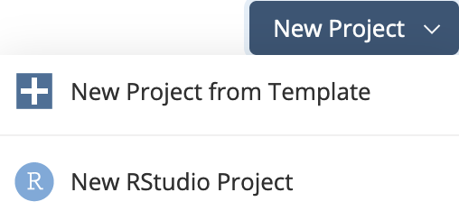
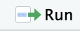

# You only need to run this once.
install.packages("tidyverse")Wrangling 2021 Data
1 Introduction
This is the second part of the 2023 NECOMMIT keynote given on Oct 21,2023.
Below you will find hints and code to mimic the data analysis we did with the sqf 2011 data on paper with arrows. Hints are labeled hints and the optional code is folded so it cannot be seen until clicked. We will work in a RScript file.
2 Setup
Go to posit cloud and set up an account.
Then click New RStudio Project  and give it a title.
3 Install and Load
First we need to install the tidyverse. This is where our functions come from. Do this in the console pane.
4 Open an RScript
- File > New File > R Script
- To run code in the R script you can highlight it and click 
- All of the following code will be entered into your RScript
5 Load the libraries
library(tidyverse)
library(readxl)6 Get the 2021 stop and frisk data
url_2021 <- "https://www.nyc.gov/assets/nypd/downloads/excel/analysis_and_planning/stop-question-frisk/sqf-2021.xlsx"
download.file(url_2021, "sqf-2021.xlsx")
sqf_2021 <- read_excel("sqf-2021.xlsx")
# The line below reads the total number of rows for the document.
#. The total number of rows is the total number of stops.
total_stops <- nrow(sqf_2021)7 Now we can start
I’d like to the recreate the data analysis we did on paper for 2011 but in R. There are suggested next steps below. You can always copy code to your RScript file.
8 Recode your variables
This is probably the trickiest part:
recode to the race column
#Recode Suspect_Race_Description to group hispanic, you might think "Latino" is a better choice
sqf_2021$SUSPECT_RACE_DESCRIPTION<-
recode(
sqf_2021$SUSPECT_RACE_DESCRIPTION,
"BLACK HISPANIC" = "Hispanic",
"WHITE HISPANIC" = "Hispanic",
"BLACK"= "Black",
"WHITE"= "White",
"MIDDLE EASTERN/SOUTHWEST ASIAN"= "MESA",
"ASIAN / PACIFIC ISLANDER"= "API",
"AMERICAN INDIAN/ALASKAN NATIVE"= "AMAN",
"no data"= "no data",
.default = NA_character_
)recode to the SUSPECT_ARRESTED_FLAG column
# This will recode wether or not someone has been arrested. 1 is yes, 0 is no.
#This will help us sum values later.
sqf_2021$SUSPECT_ARRESTED_FLAG<-
recode(
sqf_2021$SUSPECT_ARRESTED_FLAG,
"Y" = 1,
"N" = 0
)9 Take a look at the data with head(10)
Show the code
sqf_2021 |>
head(10)
# To see only the variable names you can use
sqf_2021 |>
names() 10 Select the variables
hint
hint: select() the variables we’re interested SUSPECT_RACE_DESCRIPTION and SUSPECT_REPORTED_AGE
Show the code
sqf_2021 |>
select(SUSPECT_SEX, SUSPECT_RACE_DESCRIPTION, SUSPECT_REPORTED_AGE, SUSPECT_ARRESTED_FLAG)11 Rename the variables
rename() the variables to yell less (optional)
Show the code
sqf_2021 |>
select(SUSPECT_SEX, SUSPECT_RACE_DESCRIPTION, SUSPECT_REPORTED_AGE, SUSPECT_ARRESTED_FLAG)|>
rename("sex" = "SUSPECT_SEX",
"race" = "SUSPECT_RACE_DESCRIPTION",
"age" = "SUSPECT_REPORTED_AGE",
"arrested" = "SUSPECT_ARRESTED_FLAG") 12 Tally up all of the stops by race.
hint
hint: group_by(race) and use summarize() to count all of the stops with n().
Show the code
sqf_2021 |>
select(SUSPECT_SEX, SUSPECT_RACE_DESCRIPTION, SUSPECT_REPORTED_AGE, SUSPECT_ARRESTED_FLAG)|>
rename("sex" = "SUSPECT_SEX",
"race" = "SUSPECT_RACE_DESCRIPTION",
"age" = "SUSPECT_REPORTED_AGE",
"arrested" = "SUSPECT_ARRESTED_FLAG") |>
group_by(race) |>
summarise(stops_total=n())13 Find the percent stopped by race
hint
hint: Add another variable maybe percent_stopped that find the proportion of total stops to summarize().
Show the code
sqf_2021 |>
select(SUSPECT_SEX, SUSPECT_RACE_DESCRIPTION, SUSPECT_REPORTED_AGE, SUSPECT_ARRESTED_FLAG)|>
rename("sex" = "SUSPECT_SEX",
"race" = "SUSPECT_RACE_DESCRIPTION",
"age" = "SUSPECT_REPORTED_AGE",
"arrested" = "SUSPECT_ARRESTED_FLAG") |>
group_by(race) |>
summarise(stops_by_race = n(),
percent_stopped = n() / total_stops *100
)14 Find the percent arrested
hint
hint: Add a percent_arrested variable by adding to summarize().
Show the code
sqf_2021 |>
select(SUSPECT_SEX, SUSPECT_RACE_DESCRIPTION, SUSPECT_REPORTED_AGE, SUSPECT_ARRESTED_FLAG)|>
rename("sex" = "SUSPECT_SEX",
"race" = "SUSPECT_RACE_DESCRIPTION",
"age" = "SUSPECT_REPORTED_AGE",
"arrested" = "SUSPECT_ARRESTED_FLAG") |>
group_by(race) |>
summarise(stops_by_race = n(),
percent_stopped = n() / total_stops *100,
percent_arrested = sum(arrested)/n() *100
)15 Order the percent_arrested column
hint
hint: arrange() the percent_arrested column so that they are in order.
Show the code
sqf_2021 |>
select(SUSPECT_SEX, SUSPECT_RACE_DESCRIPTION, SUSPECT_REPORTED_AGE, SUSPECT_ARRESTED_FLAG)|>
rename("sex" = "SUSPECT_SEX",
"race" = "SUSPECT_RACE_DESCRIPTION",
"age" = "SUSPECT_REPORTED_AGE",
"arrested" = "SUSPECT_ARRESTED_FLAG") |>
group_by(race) |>
summarise(stops_by_race = n(),
percent_stopped = n() / total_stops *100,
percent_arrested = sum(arrested)/n() *100
)|>
arrange(percent_arrested)16 Make a bar graph of percent stopped
hint
hint: pipe |> the data_frame above into ggplot() choose x= race, y= percent_arrested for your aesthetics. The pipe that into geom_col(). Add +theme_minimal() to make it clean.
Show the code
sqf_2021 |>
select(SUSPECT_SEX, SUSPECT_RACE_DESCRIPTION, SUSPECT_REPORTED_AGE, SUSPECT_ARRESTED_FLAG)|>
rename("sex" = "SUSPECT_SEX",
"race" = "SUSPECT_RACE_DESCRIPTION",
"age" = "SUSPECT_REPORTED_AGE",
"arrested" = "SUSPECT_ARRESTED_FLAG") |>
group_by(race) |>
summarise(stops_by_race = n(),
percent_stopped = n() / total_stops *100,
percent_arrested = sum(arrested)/n() *100
)|>
arrange(percent_arrested)|>
# Make the graph below. The information is being piped from the datafram above.
ggplot(aes(x=race,y=percent_stopped)) +
geom_col()+
theme_minimal()17 Extra 2: Add titles, axis labels and color the graph red.
hint
hint: Use the labs() function for this.
Show the code
sqf_2021 |>
select(SUSPECT_SEX, SUSPECT_RACE_DESCRIPTION, SUSPECT_REPORTED_AGE, SUSPECT_ARRESTED_FLAG)|>
rename("sex" = "SUSPECT_SEX",
"race" = "SUSPECT_RACE_DESCRIPTION",
"age" = "SUSPECT_REPORTED_AGE",
"arrested" = "SUSPECT_ARRESTED_FLAG") |>
group_by(race) |>
summarise(stops_by_race = n(),
percent_stopped = n() / total_stops *100,
percent_arrested = sum(arrested)/n() *100
)|>
arrange(percent_arrested)|>
# Make the graph below. The information is being piped from the datafram above.
ggplot()+
geom_col(aes(x=race,y=percent_stopped), fill="red",)+
labs(
y="Percent",
title = "People stopped by race in 2021",
)+
theme_minimal()